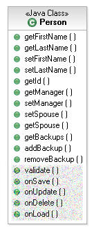
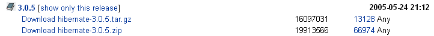
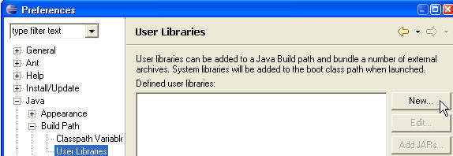
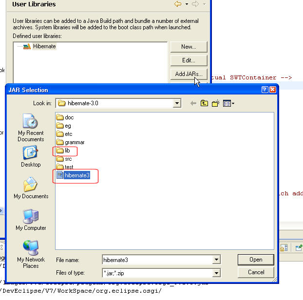
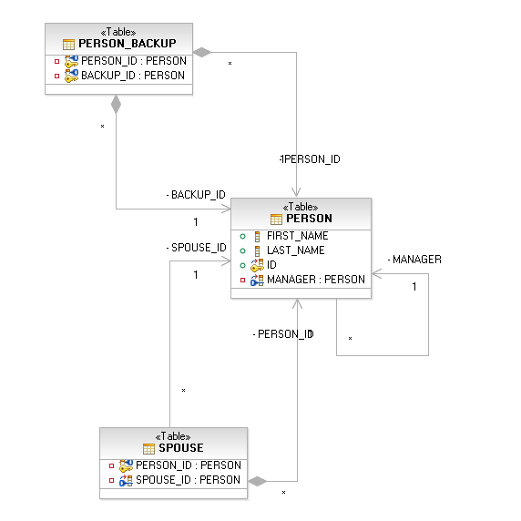
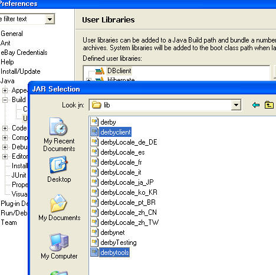

| Hibernate/Database Configuration |
This example uses Hibernate, and Derby to provide support for a simple, end to end persistence example. From a user point of view there is a single Person class, with a First/Last name properties, a one-to-many manager relationship, a one-to-one spouse relationship, and a many-to-many backup relationship. The validate, onXXX methods, are Hibernate's version of a life cycle implementation.

This project is configured with the following entry in its .classpath <classpathentry kind="con" path="org.eclipse.jdt.USER_LIBRARY/Hibernate"/>. This means that it will be looking to a User Library definition named Hibernate. Follow these instruction to create the Hibernate library configuration.
First you need to download the Hibernate 3.0.5 jars and extract them to some directory. 
Then, create a new Eclipse User Library configuration named Hibernate that will point to the needed jars:
Click on the New User Library, name it Hibernate, and add the hibernate3 jar, as well as all the .jars in the lib directory under the hibernate directory you extracted the hibernate archive.

You should have 36 jars, under the Hibernate class path entry.
We have used for this example the
Apache Derby
10.1.10 database (you may use a different database if you wish). You
will have to have a database instance installed/running locally or remotely.
A Derby database instance is running on jvelinux.raleigh.ibm.com.
If you are going to use this instance, you only need to download Derby's
client libraries, and can skip the database schema configuration.
Note: jvelinux.raleigh.ibm.com is inside the IBM firewall, and must be accessed through a browser (for authentication) before it can be accessed by a database client. Point your browser to http://jvelinux.raleigh.ibm.com/JVELINUX/, and authenticate. This authentication is transient.
Once you have a database installed, you need to create the following database schema by running this DDL script. The data base has a PERSON table, with a one-to-one, optional and unique spouse relationship to another Person using the SPOUSE table. A many-to-one manager relationship, and a many-to-many backup relationship with other Persons.

Similar to the Hibernate User Library configuration, this project will require you to define a DBclient user library that points to a set of client jars needed to access the database. If you intend to use the Derby database, use the following two .jars from the lib directory that was created from the derby archive: derbyclient.jar, and derbytools.jar.

Now that your project contains all the Hibernate and database-client jars, you will have to tell Hibernate what type database you are using, and where is it located at (the URL). Hibernate's configuration file hibernate.cfg.xml is where this information is entered. The CVS version of this file is set to work with the jvelinux.raleigh.ibm.com Derby database instance. You can modify it by updating the hibernate.connection.url property. If you are not using a Derby DataBase, you will need to also change the client driver (hibernate.connection.driver_class), and the database dialect property.
Run the Test class as a Java Application. This example will delete existing Person instances (if there), re/create a set of Person instances, read the database, and print out its content.